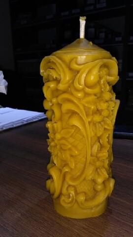

Świece z wosku pszczelego
W dawnych czasach wosk służył głównie jako waluta, dlatego też zwany był „złotą sztabką”, ale wykorzystywany był również przez setki lat jako surowiec do wyrobu świec.
Obecnie wosk zaczyna wracać do łask ze względu na jego naturalne pochodzenie, znajdując zastosowanie w różnych dziedzinach życia, a między innymi przy wyrobie świec i okazjonalnych figurek, które posiadają wiele zalet i właściwości:
- niepowtarzalny naturalny kolor i zapach przywołuje na myśl piękno nieskażonej natury
- bezdymny jasny płomień rozsiewa w pomieszczeniu delikatny zapach miodu i propolisu
- oryginalny wygląd płonącej świecy wycisza umysł przywołując wspomnienia
- aromat ulatniający się podczas palenia wosku ujemnie jonizuje powietrze pozytywnie działając na chore osoby
- uspokajająco i kojąco działają na układ nerwowy usuwając negatywne emocje, jednocześnie dając przypływ dobrej energii
- eliminują promieniowanie elektromagnetyczne wytwarzane przez sprzęt elektroniczny typu: TV, monitory
- oczyszczają powietrze ze szkodliwych substancji zawartych w dymie papierosowym
Aby działanie naturalnego wosku pszczelego było właściwe zaleca się palić świecę od 15 do 60 minut dziennie, przy czym ważne jest aby knot, który wykonany jest z czystej bawełny gasić mokrymi palcami (po uprzednim zdmuchnięciu).